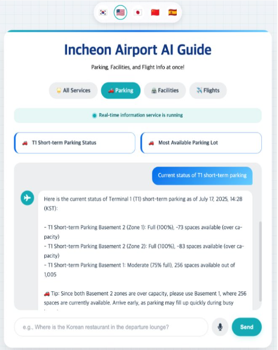
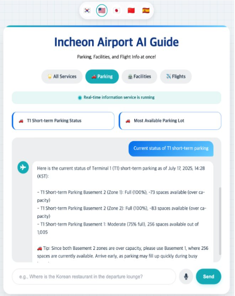

프로젝트 목표
- 공항 이용객들이 출국 전에 마주하는 다양한 문제들(길 찾기, 주차, 빠른 출국장 등)을 해결할 수 있는 올인원 서비스 제공
프로젝트 배경
- 인천공항은 연간 수천만 명이 이용하는 거대한 허브로, 다양한 고객의 요구를 충족시키는 것이 중요합니다.
- 항공편 지연, 주차장 혼잡, 복잡한 공항 내 길 찾기 등 이용객들이 겪는 불편함은 공항 경험에 큰 영향을 미칩니다.
- 데이터 분석을 통해 이러한 문제점을 파악하고, 개인화된 맞춤형 서비스를 제공함으로써 이용객의 편의성과 만족도를 극대화하고자 합니다.
프로젝트 필요성
- 한국항공협회에 따르면 인천공항 이용객들이 활성화가 필요하다고 느끼는 요소 중 40%가 교통, 대기시간, 편의시설 개선이었습니다.
- 실제로 팀원들과 주변 사람들도 이런 불편함을 겪고 있는 것을 확인했습니다.

출처: 한국항공협회
- 실제로 저희가 진행한 사용자 설문조사에서도 같은 결과를 확인할 수 있었습니다.
- 오른쪽 워드클라우드를 보시면 안내, 편의시설, 서비스, 길, 찾기가 크게 표시되고 있습니다.
설문 문항 구성
- 성별, 연령, 성격유형
- 공항 이용 목적, 빈도, 동행자, 목적지, 계절
- 탑승 몇 시간 전 도착, 주로 하는 일(쇼핑, 식사, 카페 등)
- 주차장, 안내센터 이용 빈도, 텍스트 vs 시각자료 선호도
팀원 구성 및 역할
김시온
- 데이터 수집, 파이프 라인
- Power BI 시각화
- Azure ML 모델링 및 분석
- 챗-봇 서비스 구현, 테스트 및 디버깅
- 데이터 분석
김동현
- 데이터 수집
- 길찾기 서비스 구현
- 지연 항공편 서비스 구현
박명균
- 데이터 수집
- Power BI 시각화
- UI/UX 구성
심형은
- 데이터 수집
- Azure ML 모델링 및 분석
- 서비스 기획
- 데이터 분석
오민석
- 데이터 수집
- 챗-봇 서비스 구현, 테스트 및 디버깅
- UI/UX 구성
정민철
- 데이터 수집
- Power BI 시각화
- 데이터 분석
전체 파이프라인

데이터 수집

- 공공데이터포털을 통해 총 5가지 데이터를 API를 통해 수집했습니다.
- 인천공항의 실시간 주차장 현황, 상업시설 안내, 항공편 및 기상 정보, 출국장 혼잡도 데이터를 포함합니다.
- 추가로 한국수출입은행 환율 정보도 API를 통해 수집했습니다.
- 각 데이터의 특성과 변동 주기를 고려하여 수집 주기를 다르게 설정했고, Azure Functions의 Timer trigger를 활용해 자동 수집과 주기적인 실행을 효율적으로 관리했습니다.
- google forms를 통하여 약 300건의 이용객 불편사항 데이터를 수집했습니다.
데이터 전처리
- Azure Functions을 통하여 수집된 데이터들은 Event hub로 전달되어 데이터의 실시간 입력을 감지합니다.
- Azure Stream analytics에서 해당 Event hub를 입력으로 받아 쿼리를 통하여 결측치, 이상치 처리, 파생 컬럼 생성, 정규화, 범주형 데이터 처리 등을 통해 실시간 전처리를 하여 Azure Cosmos DB의 각 컨테이너 출력으로 저장합니다.
- Cosmos DB의 change feed 기능을 통해 데이터가 삽입되거나 변경될 때 이를 자동으로 감지하여 azure function이 트리거됩니다.
- 해당 데이터는 임베딩 함수를 통해 Azure open ai의 text-embedding-3-small모델을 통해 벡터로 변환되어 diskANN으로 인덱싱되어 cosmos db에 업데이트되어 저장됩니다.
데이터 분석
1. google forms를 통한 설문 데이터 분석


- Azure ML에서 설문 데이터의 각 문항들을 통해 사용자를 군집화했습니다.
- k-means 알고리즘을 통해 이용객들을 3가지 분류로 분류했습니다.
Cluster 0
- 남성 100%
- 직장동료 동행 23%
- 출장, 환승 58%
- 주차 사용 최다
Cluster 1
- 여성 100%
- 가족, 친구/연인 동행 42%
- 유럽권 29%
Cluster 2
- 여행 목적 98%
- 남:여 7:3
- 친구/연인 동행 56%
- 동북아 58%

- 이 3가지 분류를 통하여 사용자 특징 파악하여 페르소나를 선정하고 서비스를 기획했습니다.
시간 효율 중시 출장러
불만사항
- 항공 지연 우려
- 공항까지 소요시간 불확실
- 주차위치, 잔여석 불확실
필요한 서비스
- 지연 항공 알림
- 최적 경로 안내: 우리집-공항
- 공항 주차장 정보
케어 안심형 여행자
불만사항
- 앱 조작, 시설 찾기 어려움 (아이/노약자 동행)
- 필요한 정보를 한 번에 보기를 원함
필요한 서비스
- 챗봇 서비스 + 음성 입력
- 한 눈에 보는 공항 대시보드
찍고 공유하는 탐험가
불만사항
- 항공 지연 시 할거리/볼거리 부족
- 포토존, 맛집, SNS용 찍을거리 필요
필요한 서비스
- 챗봇 서비스 + 외국어 기능
- 최적 경로 안내: 공항 내 포토존, 맛집
2. 인천공항 데이터 기반 검증
- 문제사항으로 느낀 점들을 데이터 기반으로 확인 및 재검증을 실시했습니다.
- 실시간 주차장 현황 데이터를 통해 T1 단기 주차장 1층, 2층은 하루의 82% 기간동안 주차공간이 20%이하로 남았지만, 3층 및 주차타워의 경우 하루의 46% 외에는 주차공간이 20% 이상으로 비교적 한산했습니다. -> 실시간 주차장 확인 서비스
- 실시간 항공편 및 기상 데이터를 통해 전체 항공편의 32%가 지연된 것을 확인했습니다. -> 챗-봇을 통한 항공 지연 예측 및 지연 항공편 모니터링 서비스 제공
서비스
서비스 1. AI 챗-봇
AI 챗-봇 서비스

- 기존 cosmos DB에 저장된 데이터를 벡터 임베딩하여 다른 컨테이너에 저장했습니다.
- Azure open ai에서 GPT-4.1-mini 모델을 사용하여 챗-봇을 구현했습니다.

- 사용자가 Static Web App의 UI에 질문을 입력하면 Azure Functions의 HTTP 트리거로 전달됩니다.
- 사용자의 질문을 text-embedding-3-small 모델로 벡터화하여 Cosmos DB에 저장된 벡터들과 cos 유사도 기반으로 검색합니다.

- 생성된 응답을 Azure Function에서 다시 Static Web App로 반환하여 사용자에게 응답 출력됩니다.
 

- 언어 다양성을 고려하여 다국어 지원을 구현했습니다.

- 다양한 디바이스 환경을 고려하여 반응형 웹 UI를 구현했습니다.
- Azure Speech SDK를 통해 브라우저에서 실시간 음성 인식(STT) 기능을 제공합니다.
서비스 2. 데이터 리포트(Power BI 대시보드)
메인 대시보드

- 다양한 디바이스 환경을 고려하여 컴퓨터, 스마트폰 환경에 맞게 구현했습니다.
출국 전 통합정보 페이지

- 사용자가 항공편을 검색하면 해당 항공편의 도착지 온도, 항공기 상태, 해당 국가 환율 등이 연동되어 한눈에 볼 수 있도록 제공됩니다.
- 시간이 부족하거나 빨리 수속을 하고 싶은 사람을 위한 터미널 별 출국장 혼잡도를 실시간으로 제공하여 보다 쾌적한 환경에서 수속을 마칠 수 있도록 돕습니다.
실시간 주차장 페이지
- 인천 공항의 규모가 크고 유동인구가 많은 만큼 주차에 시간이 많이 소모되고 스트레스 받는 일입니다. 이런 불편에 대응하고자 주차 구역별 주차 가능 공간, 주차장 혼잡도, 위치를 확인할 수 있습니다.
- 기간별 주차 가능 공간을 확인하여 출발 시간도 정할 수 있고, 각 구역별로 확인하고 공간이 많은 곳으로 유도할 수 있습니다.
다국어 서비스
- 공항은 이용 고객의 국적도 다양한 만큼 다양한 언어의 서비스를 제공합니다.
서비스 3. 공항 길찾기
메인 페이지

- 공항 내 상업시설 데이터와 kakao map api, T-map api를 통하여 공항 내, 외에서 길찾기 기능을 제공합니다.
공항 가는 길
- 현재 위치에서 인천공항까지 가는 길을 제공합니다.
- 현재 위치에서 거리, 실시간 소요 시간 확인이 가능합니다.
공항 내 안내
- 내 주변에 무엇이 있는지 빠르게 파악할 수 있습니다.
- T-map 보행자 경로 API로 클릭하여 실시간 경로를 제공합니다.
- 시설 위치, 거리, 도보 시간 등을 빠르게 파악할 수 있습니다.
서비스 4. 지연 항공 알림 서비스
지연 항공 알림

- 실시간 항공편 및 기상 데이터를 사용했습니다.
- Timer Trigger Function이 지연 항공편 데이터를 감지하여 Teams Webhook으로 실시간 알림을 전송합니다.

- 논리 앱(Logic APP)이 Teams에 메시지를 감지하여 Cosmos DB에 저장합니다.
- Static Web App에서 DB 데이터를 필터링하고 사용자에게 표 형식으로 시각화하여 제공합니다.
문제 상황 발생 및 해결
1. 데이터 구조 문제

문제: 각 테이블별로 의미체계를 만들어 가져올 경우 Power BI Direct Query가 비활성화됨 (현재 Power BI는 다중 의미체계 미지원)
해결: 모든 테이블을 1개의 테이블로 병합 후 Power BI 내부에서 테이블로 분할했습니다.

2. 데이터베이스 선택 문제

문제: 병합된 데이터를 저장할 DB 선택 (Azure Cosmos DB vs Azure SQL DB)

해결: 실시간성이 중요한 데이터와 서비스인 만큼, 처리 속도가 빠르고, 갑작스런 사용량 증가에 대한 대응성이 좋은 Cosmos DB를 선택했습니다.
기대 효과
- 데이터 기반 맞춤형 서비스 제공으로 공항 이용객의 불편함 해소 및 만족도 향상
- 실시간 데이터와 AI 챗봇을 활용하여 정보 접근성을 높이고, 공항 이용 경험을 혁신적으로 개선
- 개인화된 페르소나 분석을 통해 사용자 맞춤형 서비스를 제공함으로써 서비스의 효율성과 가치 증대
- 실시간 주차장, 혼잡도 등 유용한 정보를 제공하여 공항 운영 효율성 증대에도 기여